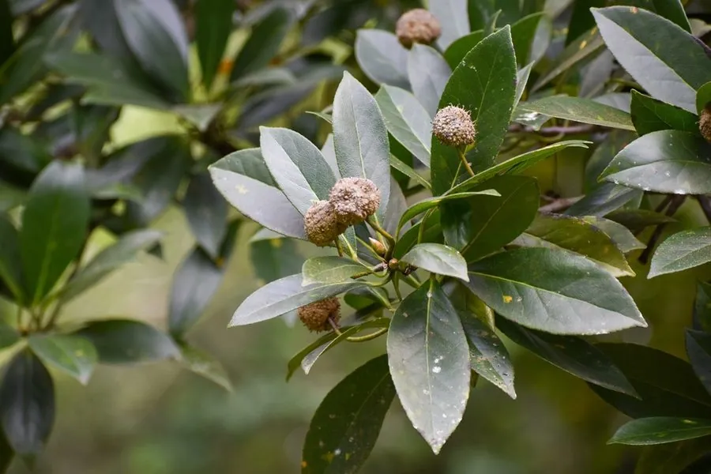

乔木 · 植物界
蕈树 Altingia chinensis

蕈树科蕈树属常绿乔木，树形高大通直，果序球形如蕈，木材耐腐，树脂芳香，是南方常绿阔叶林的重要组成树种。
- 分类
- 门被子植物门纲木兰纲目虎耳草目科蕈树科属蕈树属
- 栖息环境
- 海拔 1000 米以下的山地常绿阔叶林，喜温暖湿润、阳光充足
- 地理分布
- 中国广东、广西、福建、浙江、江西、湖南、贵州、云南；越南
- 保护级别
- 暂无评估；未被列入国家重点保护野生植物名录
物种志
蕈树为蕈树科蕈树属常绿乔木，高可达二十米，树皮灰褐色、平滑，树干通直，树冠广卵形。叶片互生，革质，倒卵状椭圆形，先端短急尖，边缘有细锯齿，表面深绿有光泽。花单性，雌雄同株，雄花组成头状花序，雌花组成球形头状花序，花期三至四月；果序球形，由多数木质蒴果组成，形似蕈类，果期九至十月。
蕈树分布于广东、广西、福建、浙江、江西、湖南、贵州、云南等地，越南也有，多生于海拔一千米以下的山地常绿阔叶林中。它喜温暖湿润和充足阳光，适宜深厚肥沃、排水良好的酸性红壤，生长较快。木材纹理直、结构细、耐腐，可供建筑、家具和胶合板用材；树干受伤后分泌的树脂有芳香，可作香料和药用。蕈树是南方常绿阔叶林的重要组成树种，也是优良的乡土绿化树。
形态与习性
- 株高可达 20 m，树干通直
- 花期3–4 月，头状花序单性
- 果期9–10 月，果序球形
- 光照喜光，幼树稍耐阴
- 水分喜湿润，年降水丰富处
- 土壤深厚肥沃的酸性红壤
- 主要用途建筑家具用材，树脂作香料
趣味知识
- 蕈树的果序由许多木质小蒴果聚成球形，远看像一枚枚绿色的蘑菇。
- 它的树干受伤后会流出芳香的树脂，民间曾用来调制香料和药材。
- 蕈树生长较快、干形通直，是南方营造混交林的优良乡土树种。